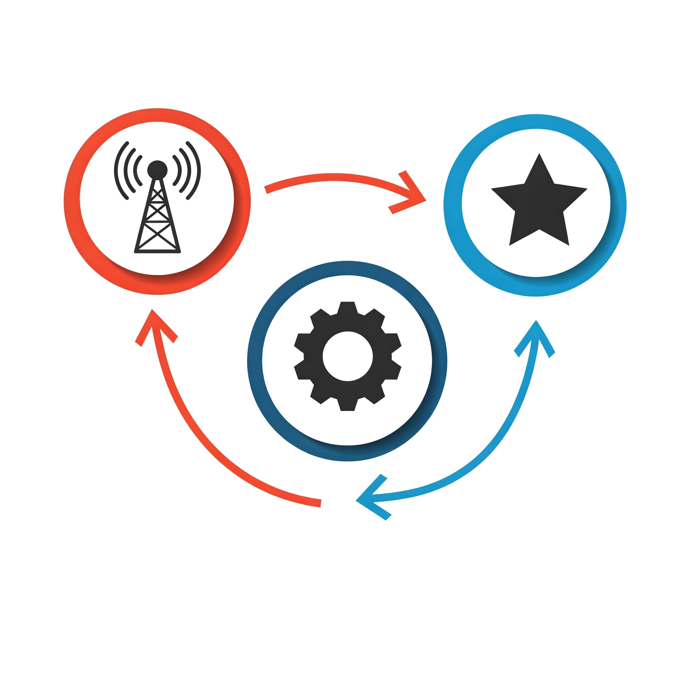
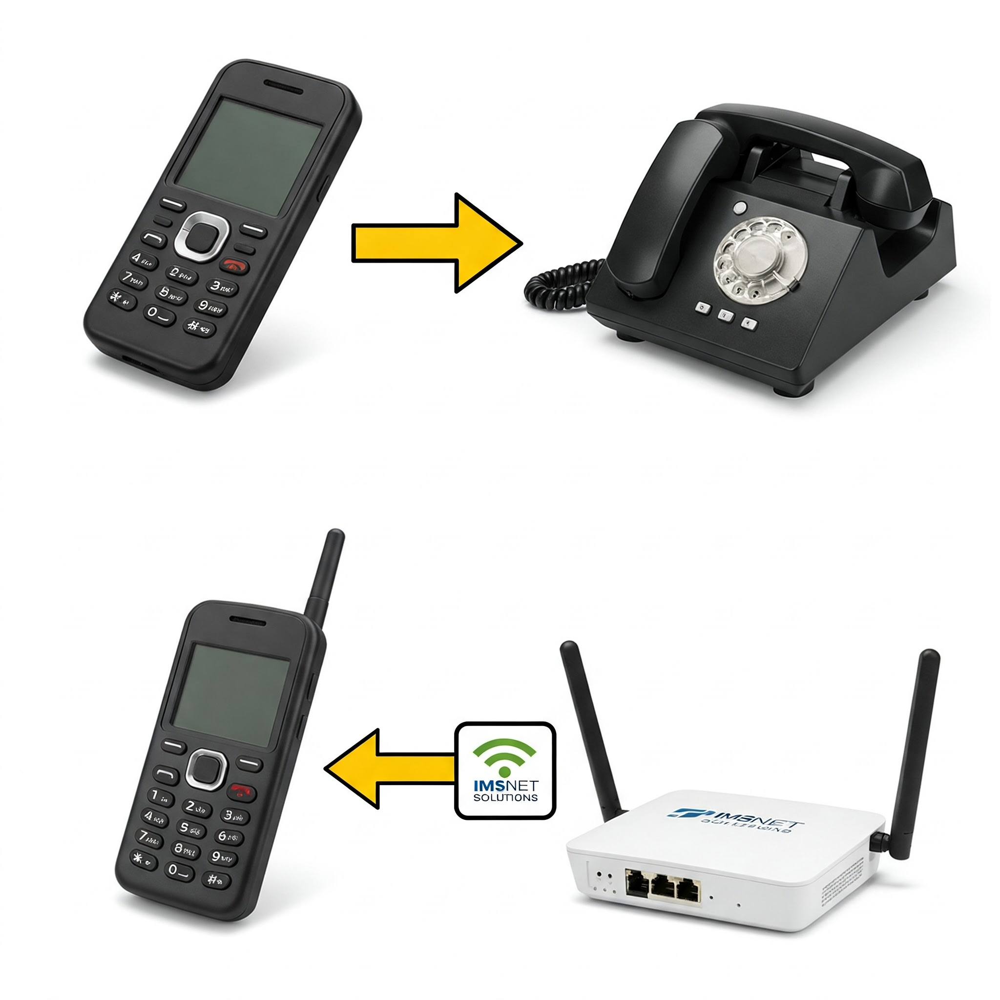

Bienvenido a IMSNet Solutions: Tu conexión al futuro
Ofrecemos internet rápido y servicios geniales para tu día a día, ¡sin complicaciones! Creado por: Lucero Chamorro
Internet que hace más por ti
Con IMSNet Solutions, conectamos tu mundo con servicios modernos como videollamadas, música sin cortes y chats rápidos, incluso si usas redes antiguas. Nuestra tecnología IMS hace que todo funcione mejor y más rápido.
¡Llamadas, videos y música al alcance de tu mano!
Nuestra magia detrás de escena
Tenemos un equipo especial que organiza tus datos para que lleguen a donde deben, sin demoras:
La "Puerta de Bienvenida": Abre la entrada a nuestros servicios.
El "Guía Inteligente": Decide cómo y dónde enviar lo que necesitas.
El "Archivo Seguro": Guarda tu información para que todo sea rápido y seguro.
Ejemplo: Cuando haces una videollamada, nuestra "Puerta" la recibe, el "Guía" la envía y el "Archivo" asegura que seas tú.
Tres pasos para conectarte
Paso 1 - Conexión fácil: Nos enlazamos a cualquier red (móvil vieja, Wi-Fi, etc.). Paso 2 - Organización rápida: Nuestra "oficina IMS" pone todo en orden. Paso 3 - Servicios geniales: Disfrutas de videollamadas, música y más.
Desde tu celular viejo hasta una llamada clara: ¡nosotros lo hacemos posible!

Funciona con todo lo que tienes
No importa qué uses, te conectamos:
Redes móviles (3G, GPRS): Llevamos tu señal vieja al mundo moderno.
Teléfonos antiguos: Convertimos las líneas clásicas en internet.
Wi-Fi: Conectamos tu internet inalámbrico a servicios top.
¿Usas un celular sencillo en el campo? ¡Con nosotros haces videollamadas!

Así luce tu conexión con nosotros
Imagina una red sencilla que lleva tus datos del celular a nuestros servicios: